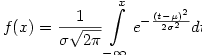

( for mimeTeX version  )
)
Click for: complete mimeTeX manual 

This page discusses mimeTeX, a program that displays math on the web.
See Writing Math on the Web for a more general discussion.
|
|
|
|
|
This page discusses mimeTeX, a program that displays math on the web. | ||
Announcement: If latex is installed on your server then see mathTeX , the successor to mimeTeX. It's based on real LaTeX and renders higher quality images than mimeTeX. If latex is not available on your server, continue using mimeTeX.
Copyright © 2002-2012, John Forkosh Associates, Inc.
email: john@forkosh.com 
|
C o n t e n t s |
Q u i c k S t a r t | |||||||
|
| |||||||
This page contains more information than you'll probably need to read. If you followed the QuickStart above, try installing mimeTeX immediately. Or continue reading until you feel comfortable trying to install mimeTeX. Prerequisites are: some knowledge of your OS's shell, of installing cgi's, of LaTeX.
"Computers are like Old Testament gods: lots of rules and no mercy."
–– Joseph Campbell, The Power of Myth (Doubleday 1988, page 18)
"Where are we going? And why are we in this handbasket?"
[¶1] MimeTeX, licensed under the gpl, lets you easily embed LaTeX math in your html pages. It parses a LaTeX math expression and immediately emits the corresponding gif image, rather than the usual TeX dvi. And mimeTeX is an entirely separate little program that doesn't use TeX or its fonts in any way. It's just one cgi that you put in your site's cgi-bin/ directory, with no other dependencies.
So mimeTeX is very easy to install.
Just download mimetex.zip and then type
unzip mimetex.zip
cc –DAA mimetex.c gifsave.c –lm –o mimetex.cgi
Now just mv mimetex.cgi to your cgi-bin/ directory,
set permissions as necessary, and you're all done.
[¶2] And mimeTeX is equally easy to use: just place an html <img> tag in your document wherever you want to see the corresponding LaTeX expression.
For example, the <img> tag
<img src="../cgi-bin/mimetex.cgi?f(x)=\int_{-\infty}^xe^{-t^2}dt" >
immediately generates the corresponding gif image on-the-fly,
displaying  wherever you put that tag.
wherever you put that tag.
[¶3] MimeTeX doesn't need intermediate dvi-to-gif conversion, and doesn't create separate gif files for each converted expression. (But you can cache images with mimeTeX's -DCACHEPATH=\"path/\" compile option.) And there's no inherent need to repeatedly write the cumbersome <img> tag illustrated above. You can write your own wrapper scripts, discussed below, around mimeTeX to simplify the notation.
"You should keep an open mind,
but not so open that your brains fall out."
[¶1] MimeTeX's benefit over similar math-on-the-web solutions is, as mentioned above, its very easy installation. But if that's not a problem for you, and if your site's server already has a LaTeX distribution installed, and suitable image conversion utilities like ImageMagick, then you may prefer to look at a math rendering script likelatexrender which uses LaTeX to create higher quality images than mimeTeX currently produces. For comparison,  , with arbitrary mean
, with arbitrary mean  and standard deviation
and standard deviation  , and at mimeTeX's next larger font size, looks like
, and at mimeTeX's next larger font size, looks like
|
latexrender |
|
mimeTeX |
|
 |
|
|
[¶2] Similar LaTeX-based solutions that you may want to look at are mathtran, textogif and gladTeX. Alternative kinds of solutions are jsmath and techexplorer. Additional discussion and several more links are atwww.tug.org/interest.html and in the tex-faq.
[¶3] For example, mathtran is a public LaTeX web service that's particularly easy to use by following these simple instructions. In the <head> of your html page, place the tag
<script type="text/javascript"
src="http://www.mathtran.org/js/mathtran_img.js"></script>
and in the <body>, wherever you want to see latex images, place tags like
<img alt="tex:any latex math expression">
For comparison,
<img alt="tex: f(x) = \frac1{\sigma\sqrt{2\pi}}
\int_{-\infty}^x e^{-\frac{(t-\mu)^2}{2\sigma^2}}dt">
looks like
|
mathtran |
|
mimeTeX |
|
unavailable |
|
|
"It's almost impossible to write contemporary mathematics.
Instead of, 'Petya washed his hands,' mathematicians write:
There is a t1 < 0 such that the image of t1 under the natural mapping
t1 –> Petya(t1) belongs to the set of dirty hands, and a t2, t1 < t2 <= 0,
such that the image of t2 belongs to the complement of that set."
[¶1] MimeTeX is as TeX-like as possible (though not 100% compliant), and you must already be familiar with LaTeX math markup to use it. If you're not, many online LaTeX tutorials are readily available. You may also want to browse Andrew Roberts' Latex Math I and Latex Math II, or my own LaTeX math tutorial. Then, instead of continuing to read this page, you can just Submit any LaTeX math expression you like in the Query Box below. I've started you out with a little example already in the box, or you can Click any of the Examples below to place that corresponding expression in the Query Box.
[¶2] Meanwhile, here are just a few quickstart tips for Submitting your own mimeTeX expressions in the Query Box below (a detailed syntax overview and reference is provided by the complete mimeTeX manual):
 , whereas "\small a+{\Large b+}c" renders
, whereas "\small a+{\Large b+}c" renders  .
. at sizes \normalsize and smaller, and renders them displaystyle
at sizes \normalsize and smaller, and renders them displaystyle  at sizes \large and larger. The LaTeX directives \displaystyle or \textstyle, and \limits or \nolimits, override mimeTeX's default in the usual way.
at sizes \large and larger. The LaTeX directives \displaystyle or \textstyle, and \limits or \nolimits, override mimeTeX's default in the usual way.[¶3] Now enter your own expression, use the sample provided, or Click any of the Examples. Then press the Submit button, and mimeTeX's rendering should be displayed in the little window immediately below it.
| ||
|
Now click Submit to see it rendered below... |
You should see  if you submit the sample expression already in the box. However, there are occasional exceptions where I couldn't program mimeTeX to recognize valid LaTeX syntax:
if you submit the sample expression already in the box. However, there are occasional exceptions where I couldn't program mimeTeX to recognize valid LaTeX syntax:
 rather than
rather than  . To render the latter image you have to write the somewhat cumbersome expression {\smashmargin2{\int\nolimits_a}^b} instead (seesmash).
. To render the latter image you have to write the somewhat cumbersome expression {\smashmargin2{\int\nolimits_a}^b} instead (seesmash)."Safety is not the absence of danger, it is the absence of ignorance."
–– Vol Libre: The Journal of the Soaring Association of Canada, June/July 1998
[¶1] Any (La)TeX error is typically also a mimeTeX error. However, mimeTeX has no command line interface or.log file for reporting errors. Its only communication with you is through the mimeTeX image rendered by your browser. So error messages are embedded in that image whenever feasible. For example, suppose you want to see  , but you mistakenly type \alpha\bethe\gamma\delta instead. Then the image rendered is
, but you mistakenly type \alpha\bethe\gamma\delta instead. Then the image rendered is , indicating the unrecognized [\bethe?] where you wanted to type \beta and had hoped to see
, indicating the unrecognized [\bethe?] where you wanted to type \beta and had hoped to see . If your expression contains some unprintable character (meaning any character mimeTeX has no bitmap for), then just
. If your expression contains some unprintable character (meaning any character mimeTeX has no bitmap for), then just  is displayed in the corresponding position.
is displayed in the corresponding position.
[¶2] The preceding example illustrates a pretty trivial error. Any non-trivial errors in your expression are likely to go unrecognized and unreported by mimeTeX, and to render unexpected images. While checking your input expression for syntax errors, keep in mind the following points about mimeTeX's behavior:
 .
."Letters can be used to construct words, phrases
and sentences that may be deemed offensive."
–– Warning label on children's alphabet blocks
[¶1] The latest release of mimeTeX is version which was last revised  . The special mimeTeX directive \version displays that same information,
. The special mimeTeX directive \version displays that same information,

[¶2] To check that your own release of mimeTeX is current, type a url into your browser's locator window something like
http://www.yourdomain.com/cgi-bin/mimetex.cgi?\version
which will display the version and revision date of mimeTeX installed on your server.
"You can observe a lot just by watching." –– Yogi Berra
[¶1] Here are various additional random examples further illustrating mimeTeX's features and usage. To see how any displayed example is done, you can Click its image to place its corresponding markup in the Query Boxabove. Then press Submit to re-render it, or you can edit the expression first to suit your own purposes. You may also want to look at a sample document prepared using mimeTeX to render equations.
|
| ||||||
|
(2) |
| |||||
|
(3) |
|
illustrating \left\{...\right. |
||||
|
(4) |
|
\overbrace{}^{} and \underbrace{}_{} |
||||
|
(5) |
| |||||
|
|
Block diagonal form using nested\begin{array}'s. |
|||||
|
(7) |
|
using \begin{eqnarray} to align equations |
||||
|
(8) |
|
commutative diagram using \begin{array} |
||||
|
(9) |
|
mimeTeX \picture(size){pic_elems}"environment", illustrating the image charge - q for a grounded conducting sphere of radius a with a chargeq at distance r > a outside it. |
||||
|
(10) |
|
\picture "environment" illustrating the surface polarization charge induced by a uniform electric field. Inside the slab of material, the volume polarization charge clearly vanishes. |
||||
"Foxes have holes and birds have nests,
but the Son of man hath not where to lay his head."
–– Jesus Christ, Sermon on the Mount (Matthew 8:20)
[¶1] Some useful scripts that automatically construct mimeTeX <img> tags for you are illustrated below. And you can also write your own scripts to simplify the HTML notation required to incorporate mimeTeX math images in your pages.
[¶1] The following javascript snippet (based on mathtran's mathtran_img.js) lets you just write <img alt="mimetex:c=\sqrt{a^2+b^2}"> wherever you want to see 
<script type="text/javascript">
<!--
// Create a namespace to hold variables and functions
mimetex = new Object();
// Change this to use your server
mimetex.imgSrc = "http://www.yourdomain.com/cgi-bin/mimetex.cgi?";
// Transform the whole document: add src to each img with
// alt text starting with "mimetex:", unless img already has a src.
mimetex.init = function () {
if (! document.getElementsByTagName) return;
var objs = document.getElementsByTagName("img");
var len = objs.length;
for (i=0; i<len; i++) {
var img = objs[i];
if (img.alt.substring(0,8) == 'mimetex:')
if (!img.src) {
var tex_src = img.alt.substring(8);
img.src = mimetex.imgSrc + encodeURIComponent(tex_src);
// Append TEX to the class of the IMG.
img.className +=' tex'; }
}
mimetex.hideElementById("mimetex.error"); }
// Utility function
mimetex.hideElementById = function (id) {
var obj = document.getElementById(id);
if (obj) obj.style.display = 'none'; }
// resolve a cross-browser issue (see CBS events)
mimetex.addEvent = function (obj, evType, fn, useCapture) {
if (obj.addEventListener) { //For Mozilla.
obj.addEventListener(evType, fn, useCapture);
return true; }
else if (obj.attachEvent) { //For Internet Explorer.
var r = obj.attachEvent("on"+evType, fn);
return r; }
}
// Initialize after entire document is loaded
mimetex.addEvent(window, 'load', mimetex.init, false);
-->
</script>
[¶2] Bulletin boards, wikis, etc, also incorporate mimeTeX images with short scripts. For example, if you're usingphpBB2, then Jameson contributed the following typical one-line mod that lets you write[tex] c=\sqrt{a^2+b^2} [/tex] to obtain the same image illustrated above
#--------[open]-----------------------------------------------------
/includes/bbcode.php
#--------[find]-----------------------------------------------------
// Remove our padding from the string..
#--------[before, add]----------------------------------------------
$text = preg_replace('/\[tex\](.*?)\[\/tex\]/ie',
"'<img src=\"/cgi-bin/mimetex.cgi?'.rawurlencode('$1').'\" align=\"middle\" />'",
$text);
If you're using phpBB3, then no mod is even needed. Just click Postings from the Administrator Control Panel, and add the custom BBCode [tex]{TEXT}[/tex] with the HTML replacement <img src="/cgi-bin/mimetex.cgi?{TEXT}" align=middle>
[¶3] Similarly, PmWiki also has a mimeTeX plugin that lets you just write {$ c=\sqrt{a^2+b^2} $} to obtain that same image. Several other packages also have similar mimeTeX plugins, including
|
Package |
|
Plugin |
|
|
||
|
|
||
|
|
||
|
|
||
|
|
||
|
|
||
|
|
[¶4] Please note: If you're writing your own plugin for mimeTeX, please don't write php code using system( ), or any other shell escape mechanism, just to cache images. Use mimeTeX's -DCACHEPATH=\"path/\" compile option instead. system( ) raises security issues, either real ones if used carelessly, or just in the minds of system administrators. Either way, I've received many emails from people unable to use mimeTeX because of unnecessary system( ) calls prohibited by security-conscious sysadmins. MimeTeX itself poses minimal risk when used as illustrated above, but you're responsible for any plugin/wrapper script you write around it.
"If you think it's lonely at the top,
try it at the bottom."
[¶1] An image like  does not look as good as the same image that's vertically aligned with your surrounding text. Along with several standard HTTP header fields, mimeTeX also emits a special Vertical-Align: –nn header, where –nn is the number of pixels (usually negative as illustrated) needed for a style="Vertical-Align: –nn px" attribute in the <img> tag used to render your expression. This Vertical-Align: header is obtained by placing the directive \depth anywhere in your expression.
does not look as good as the same image that's vertically aligned with your surrounding text. Along with several standard HTTP header fields, mimeTeX also emits a special Vertical-Align: –nn header, where –nn is the number of pixels (usually negative as illustrated) needed for a style="Vertical-Align: –nn px" attribute in the <img> tag used to render your expression. This Vertical-Align: header is obtained by placing the directive \depth anywhere in your expression.
[¶2] But mimeTeX's special Vertical-Align: header is unrecognized and ignored by your browser. You have to get the header, interpret it, and write the corresponding <img> tag. The only feasible way to do all this is using a scripting language. This page uses the following, rather naive, php code
<?php
$mimetexurl = "http://www.yourdomain.com/cgi-bin/mimetex.cgi?";
function verticalalign( $expression ) {
global $mimetexurl;
$url = $mimetexurl . "\depth~" . $expression;
$referer = $_SERVER['SERVER_NAME'] . $_SERVER['PHP_SELF'];
$valign = "0";
$ch = curl_init( $url );
curl_setopt( $ch, CURLOPT_RETURNTRANSFER, true );
curl_setopt( $ch, CURLOPT_HEADER, true );
curl_setopt( $ch, CURLOPT_REFERER, $referer );
$gif = curl_exec( $ch );
$errno = curl_errno( $ch );
curl_close( $ch );
if ( $errno == 0 ) {
$fields = explode("Vertical-Align:",$gif);
$vfield = trim($fields[1]);
$fldlen = strspn($vfield,"+-0123456789");
$valign = substr($vfield,0,$fldlen); }
return $valign;
}
function mimetextag( $expression ) {
global $mimetexurl;
// note: curl_init() stops at the first whitespace char in $url argument
$expression = preg_replace("{ }","~",$expression); //so remove whitespace
$expression = preg_replace("{\n}","~",$expression); // and newlines
$valign = verticalalign($expression);
$url = $mimetexurl . "\depth~" . $expression;
echo ' <img src="',$url,'" ';
echo ' style="Vertical-Align:',$valign,'px" ';
echo ' alt="" border=0>', "\n";
}
?>
[¶3] Now you can write <?php mimetextag('\frac12\left(a^2+b^2\right)'); ?> wherever you want to see correctly aligned. Note that the php code automatically prepends \depth to your expression for you.(Also note that this code calls mimeTeX twice to render each expression, once to get the Vertical-Align: header and build an <img> tag, and then again to render that tag. If you're a good php programmer and write better code, please email me a copy.)
correctly aligned. Note that the php code automatically prepends \depth to your expression for you.(Also note that this code calls mimeTeX twice to render each expression, once to get the Vertical-Align: header and build an <img> tag, and then again to render that tag. If you're a good php programmer and write better code, please email me a copy.)
[¶4] If you're using mimeTeX's -DCACHEPATH=\"path/\" compile option, you can request that all images be cached with Vertical-Align: headers, whether or not they contain the \depth directive. Prefix your path/ with a leading % and write -DCACHEPATH=\"%path/\" instead. That leading % won't become part of your cache directory's path/, but it will signal mimeTeX to cache headers along with each image. (In this case, the directive \nodepth suppresses mimeTeX's header caching for that image.)
"Amateurs built the Ark. Professionals built the Titanic."
|
Very quickly --- download mimetex.zip and then type
Now mv mimetex.cgi to your cgi-bin/ directory, and you're all done. |
|
[¶1] mimeTeX's source code is ansi-standard C, and should compile and execute without any change. QuickBuild instructions below are for Unix. Modify them as necessary for your particular situation (note the -DWINDOWS switch if applicable). More detailed instructions comprise Section II of the complete manual.
[¶2] The steps needed to compile and install mimeTeX are:
|
README |
mimeTeX release notes |
|
COPYING |
GPL license, under which you may use mimeTeX |
|
mimetex.c |
mimeTeX source program and all required functions |
|
mimetex.h |
header file for mimetex.c (and for gfuntype.c) |
|
gfuntype.c |
only needed if you want to create new font data for texfonts.h |
|
texfonts.h |
output from several gfuntype runs, needed by mimetex.c |
|
gifsave.c |
gif library by Sverre H. Huseby http://shh.thathost.com |
|
mimetex.html |
complete mimeTeX user's manual |

Ascii dump of bitmap image... Hex dump of colormap indexes...
...........**....................**... ..........1**1...................1**1..
..........*..*......*...........*..*.. ..........*23*......*............*23*..
.............*......*..............*.. .............*......*...............*..
....****.....*......*.....*..*.....*.. ...1****....2*......*.....2*..*....2*..
...*.*.*....*.......*....**..*....*... ...*.*.*...1*.......*.....**..*...1*...
.....*.....*.*..********..*..*...*.*.. ....1*1...2*.*..********..3*..*..2*.*..
.....*....****......*.....*..*..****.. ....2*2...****......*......*12*..****..
..*.*.*.............*.....*.*......... ..*.*.*.............*......*.*2........
...****.............*.....***......... ..1****.............*......***.........
....................*.......*......... ....................*........*.........
.........................*.*.......... ..........................*.*1.........
.........................**........... ..........................**1..........
The 5 colormap indexes denote rgb vals...
.-->255 1-->196 2-->186 3-->177 *-->0
 in the upper-left corner of your window, just like clicking this link does, which tests my mimetex.cgi,
in the upper-left corner of your window, just like clicking this link does, which tests my mimetex.cgi, [¶3] Any problems with anything above? Read the more detailed instructions in Section II of the complete manual.
"You have to plan for things in advance,
because afterwards it's way too late."
[¶1] Compiling your own mimeTeX executable from source is highly recommended. But if you don't have a compiler, or experience some other difficulty, then the following pre-compiled binaries are available. Each binary is the last file in a zip file named mimetex.zip, which also contains all the source files that were current when the binary was compiled. I can't be sure my binary will work on your machine. Unix binaries are usually named mimetex.cgi inside the mimetex.zip file, and others (e.g., Windows and VMS) are usually named mimetex.exe. Unzip and rename them as necessary for your own system.
|
Operating System |
Last Updated |
|
| |
|
| |
|
| |
|
| |
|
| |
|
| |
|
|
[¶2] After downloading, if you have "shell access", test your downloaded binary from the command line as described in the compile section above, to make sure it's the right binary for your system. If you see the two ascii rasters illustrated above, then your binary's good, so mv it to your server's cgi-bin/ directory and set permissions as necessary. But if your mimetex binary won't display ascii rasters from the command line, then it's not going to emit gifs from the server. Either find a compatible binary from the list above, or you'll have to find a way to compile your own binary from mimetex's source.
"My grandfather once told me there are two kinds of people:
Those who do the work and those who take the credit.
He told me to try to be in the first group; there was much less competition."
–– Indira Gandhi, the late Prime Minister of India
[¶1] MimeTeX's copyright is registered by me with the US Copyright Office, and I hereby license it to you under the terms and conditions of the GPL. There is no official support of any kind whatsoever, and you use mimeTeX entirely at your own risk, with no guarantee of any kind, in particular with no warranty of merchantability.
[¶2] By using mimeTeX, you warrant that you have read, understood and agreed to these terms and conditions, and that you possess the legal right and ability to enter into this agreement and to use mimeTeX in accordance with it.
[¶3] Hopefully, the law and ethics regarding computer programs will evolve to make this kind of obnoxious banter unnecessary. In the meantime, please forgive me my paranoia.
[¶4] To protect your own intellectual property, I recommend (both are pdf) Copyright Basics from The Library of Congress, in particular Circular 61, Copyright Registration for Computer Programs. Very briefly, downloadForm TX and follow the included instructions. In principle, you automatically own the copyright to anything you write the moment it's on paper. In practice, if the matter comes under dispute, the courts look _very_ favorably on you for demonstrating your intent by registering the copyright.
"Nostalgia isn't what it used to be." –– Peter De Vries
[¶1] I hope you find mimeTeX useful. If so, a contribution to your country's TeX Users Group, or to the GNUproject, is suggested, especially if you're a company that's currently profitable.